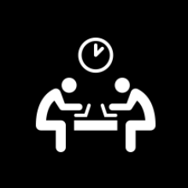

Austin, TX - Apr 12, 2014
So my first hackathon just ended a few days ago and my team did really good. To be honest in the beginning I thought we were going to fail really bad; I thought our project was way out of our league. In 2 days we had to build an app called "Moodeo". With this app you are able to hold a video call with a friend and both are able to watch a video simultaneously; this will be a random video that will be selected from our database based on the user's mood (ex: If user selects the mood "funny", a funny video will show for both users).
The hackathon started Monday at 9am and ended with presentations on Tuesday 5pm. Our group met on that Saturday before the hackathon to get organized, plan, and figure out the approach we were going to take. I have to admit even though we spent quite some time planning we would take long breaks here and there to play "League of Legends" and clear our minds.

Monday arrived and the hackathon began. I must say that we did not have it easy, we were not able to use Rails for this app, we had to write all our back-end code in Ruby using of course TDD (Test driven development), we had to have persistence in our data, and use HTML and CSS along with Sinatra to build the client interface. We had very little knowledge of how to add a persistent database, and also had no experience with APIs yet. For this project we also had to use an API called "Opentok" to help us with the video call functionality. We implemented this with Javascript to make the connections and Ruby to generate the session keys necessary to establish a connection between the users.
We did not get much rest before starting. The day the hackathon started I was fine, but after a full day of coding and writing over 1k lines of code between tests, use cases and methods for our app by 3am, I was dead. We ended up going to bed at 4am. Unfortunately, even though I was extremely tired and running on autopilot, when I laid down in my bed my brain was rolling at 10k RPM. I had at mix of random thoughts- about 80% were code related but everything was unorganized and so I couldn't sleep.
I woke up at 7am, got ready and went back to work on the app. I was very tired but at least regained some energy that helped me get through the rest of the day. By 12-1pm approximately 90% of our back-end code had been finished, and around 75% for the front-end portion. We still had to implement the main part of our app, the video call between users, and since we had never worked with APIs we had no idea on how to proceed. Short story: we ended up reading a lot of documentation and experimenting with the API and finally about 30 mins before presentation we got it to work. In the last 30 mins we had we implemented it in our client interface and it was a success for the presentation. Even though we had a pretty good product and our presentation was pretty cool we did not have enough time to implement the video playback based on users mood. I must say what we delivered was pretty fuckin' awesome, just hearing the audience's reaction when we tested the video call was good enough (literally I heard a few "Wow!!... What the fuck?!" from the people on the class before us.
Post hackathon mistakes...
So when the hackathon was over we had a beer keg left to celebrate. I should have gone to sleep and recover, but I decided to stay and play many beer pong games. Not pleased with just the keg, I went on to play some League of Legends instead of getting some rest. I stayed up until who knows what time. For the reminder of the week, and even some days of the following week, I felt like a zombie. I'm definitely going to limit, if not stop playing LoL for good.